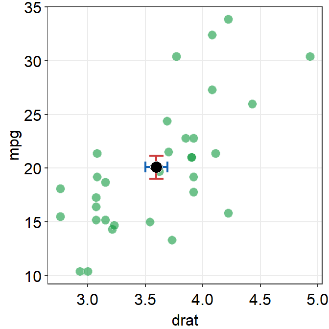
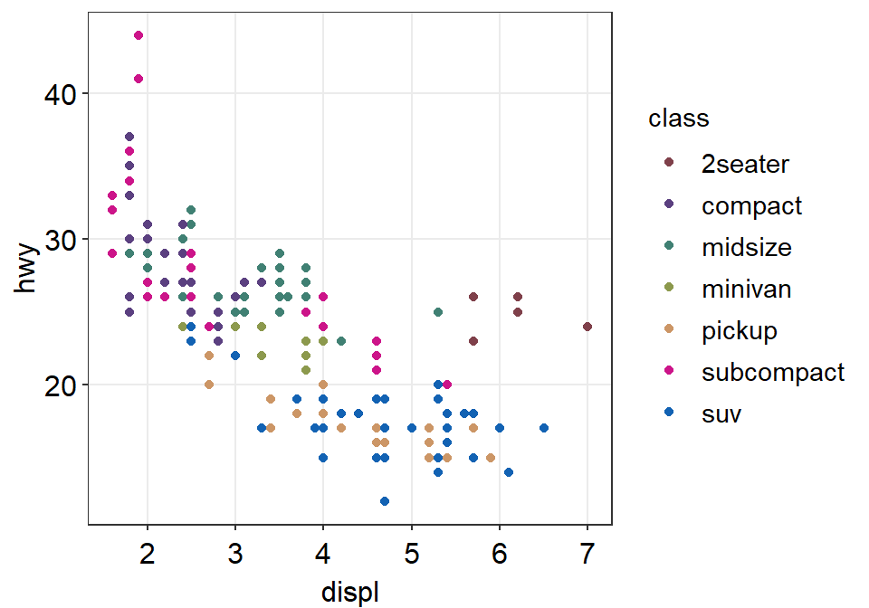
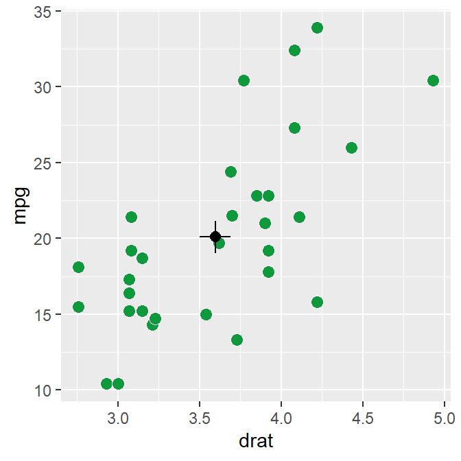
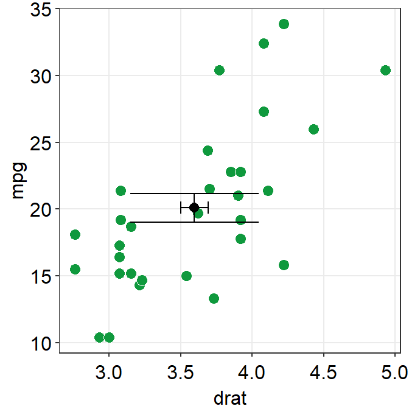

Chapter 3 Boxplot and Violin Plot
Load these packages by typing the codes below.
library(tidyverse) # it has ggplot2 package
library(cowplot) # it allows you to save figures in .png file
library(smplot)3.1 Upload Sample Data (csv file) in RStudio
Download requirements
- Download data.csv from https://raw.githubusercontent.com/smin95/dataviz/master/data.csv
- Put the file data.csv in your LearnR folder
Before we get started
- Set LearnR folder as your working directory by by clicking: Session -> Set Working Directory -> Choose Directory. Then find your LearnR folder.
- Load these three packages with the
library()function: ggplot2, cowplot and smplot.- Since the tidyverse package includes the ggplot2 package, you can load tidyverse instead. tidyverse has other packages beside ggplot2, so it is more useful.
- Remember from the last tutorial that:
- Functions from the ggplot2 package include
ggplot()and other geom functions such asgeom_point(),geom_smooth(), etc. - Functions from the smplot package improve the ggplot2 graphs visually. However, they are not required to make a graph using ggplot2.
- The cowplot package has a function called
save_plot, which is very useful for saving a graph as an image.
- Functions from the ggplot2 package include
data.csv
- Let’s load data.csv in R from your LearnR folder.
- Then store the loaded data into a variable called
df. - We will use a function from the tidyverse package called read_csv().
- For more information, type
?read_csv().
- For more information, type
df <- read_csv('data.csv')##
## -- Column specification -----------------------------------------------------------
## cols(
## Subject = col_character(),
## Value = col_double(),
## Day = col_character()
## )If you get an error such as
object 'data.csv' not found, make sure you set your working directory in the LearnR folder. Also make sure you have downloaded your data and saved it in the LearnR folder.You can view the entire data frame by typing
View(df).
View(df)- There are three columns in df.
- The first column (Subject) is the subject number. S1 means the first subject, and S2 second.
- The second column (Value) is the data. It contains numbers.
- The third column (Day) is the day of testing. There are three days of measurement: One, Two and Three.
- What is the data about?
- 30 patients were tested across three days to see if there was an improvement in their visual function (Value). The higher value, the better the vision.
- Day One: first day of the study. This is the baseline value. After this measurement, patients received treatment (ex. drug, surgery, etc).
- Day Two: second day of the study. This is the one day after receiving the treatment.
- Day Three: third day of the study. This is two days after receiving the treatment.
- The data are all fake.
read_csv('data.csv')
Let’s use the variable df to store the output from data.csv.
df is shortened from data frame, which refers to a structure of the data that is commonly used for data analysis.
In fact, ‘data.csv’ has the structure of a typical data frame.
- Each column is a variable.
- Each row represents an observation
In future, I suggest you save data that has a similar structure to that of df.
- Put your own data in Microsoft Excel and save it as a csv file to load it on R.
Exercise: Open data.csv using Microsoft Excel. Change the name of third column into Group. Then, save it as data2.csv. What does this data frame indicate now?
- It indicates there are 30 individuals for each group. Also, there are 3 groups, so there are 90 individuals total. So, it might be better to change the subject number so each person has a unique label, such as S1 to S90.
Best way to plot data
- A popular way to visualize data is plotting a bar graph.
- However, a bar graph does not show the distribution of the data well.
- For this reason, boxplot and violin plots have become more popular in scientific writing.
3.2 Boxplot
What is a boxplot?
- This is the basic structure of the boxplot.

- The line in the middle is the median of the data.
- The first quartile is the lower 25% of the data.
- The third quartile is the 75% percentile of the data.
- The interquartile range is the distance between the first and third quartiles.
- The lower whisker is the lowest data point without outliers.
- The upper whisker is the highest data point without outliers.
- The point that lies outside the whisker is the outlier.
Boxplot vs bar graph
- Here is the basic structure of the bar graph.

- The boxplot is more informative than bar graph.
- The bar graph only shows the mean (average) of the data and the standard error.
- The bar graph does not represent the distribution very well. The narrow errorbar is quite misleading here.
- For this reason, let’s focus on drawing a boxplot.
Boxplot using ggplot2
- We want to plot Value (y-axis) from each Day (x-axis).
- As always in ggplot, let’s start by writing
ggplot().- Make sure you specify the data to plot by writing
data = dfinggplot().
- Make sure you specify the data to plot by writing
- Also, you will need to specify the x- and y-axes in the
mappingargument withinggplot().x = Dayandy = Value.
ggplot(data = df, mapping = aes(x = Day, y = Value))
- However, as we learned in the last lesson, ggplot requires geom objects to plot something. Last time we used geom_point(), which plots points.
- Now, let’s use geom_boxplot() to plot a boxplot.
ggplot(data = df, mapping = aes(x = Day, y = Value)) + geom_boxplot()
- Here’s the boxplot! But I think there is a problem here.
- Day Three precedes Day Two in the x-axis.
- Exercise: Why do you think Three appeared first?
Problem: Alphabetical order
- The issue with the boxplot is that the x-axis followed an alphabetical order.
- Th precedes Tw. In short, R does not seem to know that we want the order to be One -> Two -> Three.
- R decided to follow the alphabetical order is because the column Day is shown as
<chr>, which means character.
df## # A tibble: 90 x 3
## Subject Value Day
## <chr> <dbl> <chr>
## 1 S1 -0.752 One
## 2 S2 0.220 One
## 3 S3 -1.00 One
## 4 S4 1.91 One
## 5 S5 0.395 One
## 6 S6 -0.985 One
## 7 S7 0.585 One
## 8 S8 0.886 One
## 9 S9 0.691 One
## 10 S10 -0.366 One
## # ... with 80 more rows- Note that the Subject column is also considered as
<chr>(characters) because it contains texts/alphabets. - The Value column is categorized as
<dbl>, which means double.- Double basically means numbers.
- In R, character is also referred to as string. They mean the same thing.
- Here are more examples of characters/strings.
a <- 'R is very useful!'
b <- 'Dogs are so cute.'
c <- 'Clarinet is the best.'- In these examples, you have stored the characters/strings in the variables a, b and c.
Displaying characters in a non-alphabetical order
Factors are important when you want to display characters in non-alphabetical order.
Factors are variables that have a limited number of different values.
For example, if a dataset has two groups (controls and patients), these can be referred to as factors.
However, when you are using
read_csv()to load data into RStudio,read_csv()will interpret texts/alphabets as characters, not factors.- This is a problem when you need a non-alphabetical order, such as one -> two -> three and Jan -> Feb -> Mar -> Apr.
To resolve this problem, you will need to change the characters into factors using
factor()function.
df$Day <- factor(df$Day, levels = c('One','Two','Three'))- Remember that
<-means equivalent. - Also,
$of a data frame can extract a specific column- You can also type
df$Valueand run it to see what happens. You will get all values of the second column Value.
- You can also type
df$Value- By using
factor(), you are making the Day column of df into factor from character. - However, you will need to store the factored version of
df$Dayby using<-. If not,df$Daywill stay as character. levelsargument infactor()allows you to specify the order of the factors.- For more information about factors, please check Chapter 15 of R for Data Science (https://r4ds.had.co.nz/factors.html).
- Note: you do not have to understand this part 100%. However, if you do encounter similar issues, I suggest you resolve it with the solution above.
Double-check if the ‘Day’ column is factor
- Let’s open the data frame df again.
df## # A tibble: 90 x 3
## Subject Value Day
## <chr> <dbl> <fct>
## 1 S1 -0.752 One
## 2 S2 0.220 One
## 3 S3 -1.00 One
## 4 S4 1.91 One
## 5 S5 0.395 One
## 6 S6 -0.985 One
## 7 S7 0.585 One
## 8 S8 0.886 One
## 9 S9 0.691 One
## 10 S10 -0.366 One
## # ... with 80 more rows- Now we see
<fct>in the Day column. This means that the column is now factor, not character.
Back to boxplot using ggplot2
- Now let’s draw the boxplot again.
ggplot(data = df, mapping = aes(x = Day, y = Value)) + geom_boxplot()
- Since we have converted the Day column of df into factor, the boxplot successfully plots each day in the correct order.
A boxplot with individual data
Sometimes, it is preferable to plot individual data on top of the boxplot.
There are many ways to do this. Here is a simple solution by using
geom_jitter(). For more information, type?geom_jitter.
ggplot(data = df, mapping = aes(x = Day, y = Value)) + geom_boxplot() +
geom_jitter()
- I think the points are too spread. So let’s set the
widthof the spread ingeom_jitter()to 0.15. - Also, let’s apply a different color of points for each Day.
ggplot(data = df, mapping = aes(x = Day, y = Value, color = Day)) +
geom_boxplot() +
geom_jitter(width = 0.15)
- Now we can make the boxplot prettier with
sm_minimal(), which removes all grids in the graph. We can also setlegends = FALSEto remove the legends. - Let’s also add a title Visual improvement after treatment using
ggtitle(), which is a function from the ggplot2 package.
ggplot(data = df, mapping = aes(x = Day, y = Value, color = Day)) +
geom_boxplot() +
geom_jitter(width = 0.15) +
sm_minimal(legends = FALSE) +
ggtitle('Visual improvement after treatment')
- Now let’s set the colors using
sm_palette(). Remember from the last lesson that we set the colors in ggplot by usingscale_color_manual()for points without borders. - Let’s write
3insm_palette()because we need 3 colors (for each Day).
ggplot(data = df, mapping = aes(x = Day, y = Value, color = Day)) +
geom_boxplot() +
geom_jitter(width = 0.15) +
sm_minimal(legends = FALSE) +
ggtitle('Visual improvement after treatment') +
scale_color_manual(values = sm_palette(3))
- If you need horizontal grids, you can simply replace
sm_minimal()withsm_hgrid(). There is alsosm_vgrid()but I will not try it here because it is not so useful in our context.
ggplot(data = df, mapping = aes(x = Day, y = Value, color = Day)) +
geom_boxplot() +
geom_jitter(width = 0.15) +
sm_hgrid(legends = FALSE) +
ggtitle('Visual improvement after treatment') +
scale_color_manual(values = sm_palette(3))
geom_boxplot() vs sm_boxplot()
geom_boxplot()does not show individual data. You need to addgeom_jitter().sm_boxplot()shows both a boxplot and individual data.- It automatically uses
sm_hgrid().
- It automatically uses
ggplot(data = df, mapping = aes(x = Day, y = Value, color = Day)) +
sm_boxplot() +
ggtitle('Visual improvement after treatment') +
scale_color_manual(values = sm_palette(3))
- Let’s keep the color of the boxplot the same across Day. So we should remove
color = Dayinaes().- However, since the shape is 16 (circle without borders), this will cause the points across Day to have the same color too.
- So let’s change the shape of the points to 21, which is a circle with borders.
- So
filldecides the filling color now. Let’s setfill = Dayinaes(). - Also,
colorhere only affects the border color. Let’s set it towhite.
- So
- Make sure you change
scale_color_manual()toscale_fill_manual().
ggplot(data = df, mapping = aes(x = Day, y = Value, fill = Day)) +
sm_boxplot(shape = 21, color = 'white') +
ggtitle('Visual improvement after treatment') +
scale_fill_manual(values = sm_palette(3))
- Now, pick your favorite boxplot and store it in a variable called my_boxplot using
<-.
my_boxplot <- ggplot(data = df, mapping = aes(x = Day, y = Value, fill = Day)) +
sm_boxplot(shape = 21, color = 'white') +
ggtitle('Visual improvement after treatment') +
scale_fill_manual(values = sm_palette(3))Save boxplot
- We can save the boxplot by using
save_plot()from the cowplot package. - Let’s set the aspect ratio (width/height) to 1. So, type
base_asp = 1.
save_plot('boxplot.jpg', my_boxplot, base_asp = 1)- This image file should now be in your LearnR folder.
3.3 Violin Plot
- The boxplot represents the distribution quite well but it can still be misleading.
- Also, it can be visually overwhelming (i.e., too crowded) to some readers.
- So, researchers have begun favoring the violin plot more.
Structure of the violin plot

- The part in the middle is the widest because it has most points. This part has the highest point density.
- The lower and upper ends of the violin plot are thinner because there are less points.
- Let’s draw a violin plot in R.
Violin plot with ggplot2
- Let’s draw the violin plot. Specify the x-axis to Day and the y-axis to Value using data frame df.
ggplot(data = df, mapping = aes(x = Day, y = Value)) + geom_violin()
- Notice that since we have already converted the Day column of df into factor, the violin plot’s x-axis is in the correct order.
- Also, notice that we can just replace
geom_boxplot()withgeom_violin().
Violin plot with individual points
- Let’s add individual points to the violin plot by using
geom_jitter().- Set
widthof the spread to0.15.
- Set
ggplot(data = df, mapping = aes(x = Day, y = Value)) +
geom_violin() +
geom_jitter(width = 0.15)
- Now let’s apply different color to each Day like we did in boxplot by using
scale_color_manual().- Let’s use
sm_palette(3).
- Let’s use
ggplot(data = df, mapping = aes(x = Day, y = Value, color = Day)) +
geom_violin() +
geom_jitter(width = 0.15) +
scale_color_manual(values = sm_palette(3))
- Finally, let’s make it pretty and remove the legend by applying
sm_hgrid()theme, which only has horizontal grids. - Let’s also add a title Visual improvement after treatment using
ggtitle().
ggplot(data = df, mapping = aes(x = Day, y = Value, color = Day)) +
geom_violin() +
geom_jitter(width = 0.15) +
scale_color_manual(values = sm_palette(3)) +
sm_hgrid() +
ggtitle('Visual improvement after treatment')
geom_violin() vs sm_violin()
geom_violin()does not show individual data. You need to add geom_jitter().sm_violin()shows both a boxplot and individual data.- It automatically uses
sm_hgrid(). - It also display lines that represent the mean and +/- standard deviation.
- It automatically uses
- In
sm_violin(), the default shape ('point_shape') is 16, which is the circle without borders. - Let’s try using
sm_violin(). colorhere filling color of the jittered points. Also,coloraffects the color of the lines that show the mean and +/- standard deviation.- Let’s set
color = Dayinaes()so that we can apply different colors of the lines and the points for each group. - Make sure you have
scale_color_manual().
ggplot(data = df, mapping = aes(x = Day, y = Value, color = Day)) +
sm_violin() +
scale_color_manual(values = sm_palette(3)) +
ggtitle('Visual improvement after treatment')
Save your violin plot
- Pick your violin plot and store it in a variable called
my_violinusing<-.
my_violin <- ggplot(data = df, mapping = aes(x = Day, y = Value, color = Day)) +
sm_violin() +
scale_color_manual(values = sm_palette(3)) +
ggtitle('Visual improvement after treatment')- We can save the violin plot by using
save_plot()from the cowplot package. - Let’s set the aspect ratio (width/height) to 1. So, type
base_asp = 1.
save_plot('violin.jpg', my_violin, base_asp = 1)- This image file should now be in your LearnR folder.
3.4 Summary
- You have learned how to convert characters to factors.
- Factor is important to order words/letters in a non-alphabetical order.
- You can now make a boxplot and a violin plot with R.
- They are more informative than a bar graph.
- You have learned to use geom functions, such
geom_boxplot(),geom_violin(), andgeom_jitter().- These are functions from the ggplot2 package.
- You can also plot individual data at the same time with functions from the smplot package.
- These functions are
sm_boxplot()andsm_violin().
- These functions are